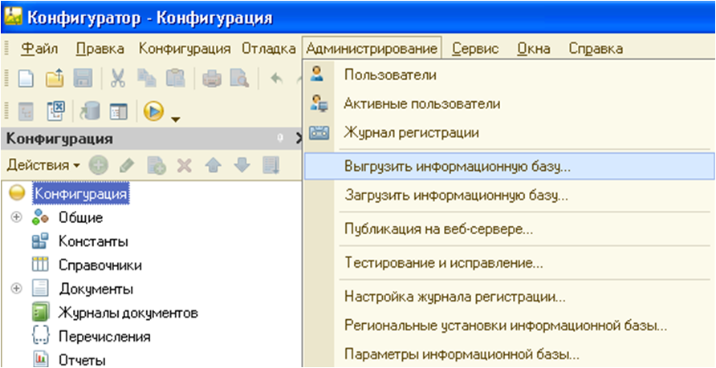
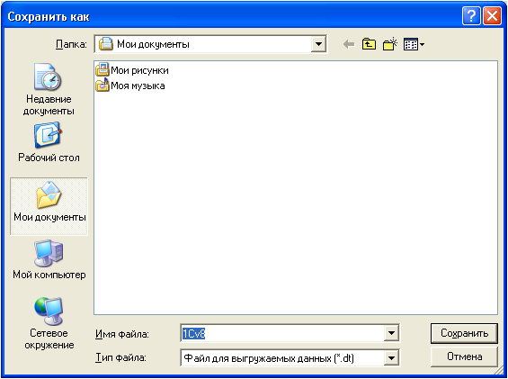
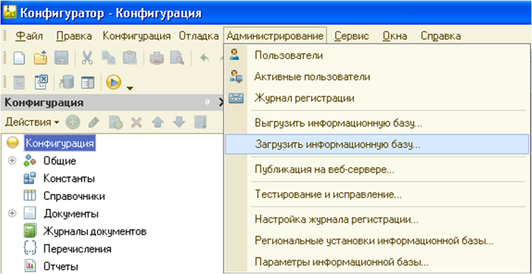
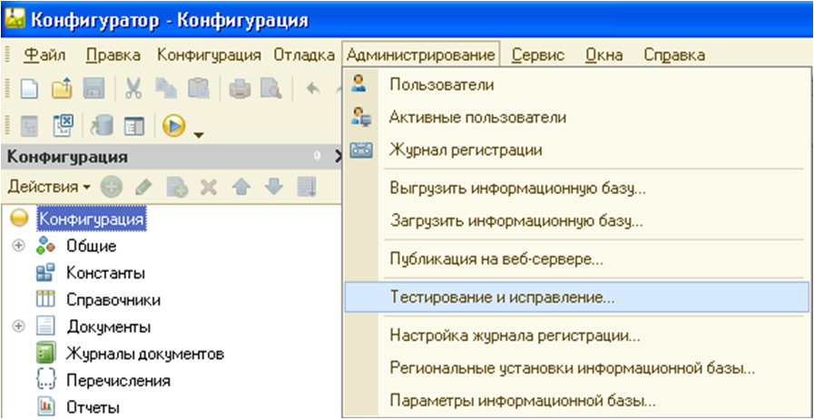
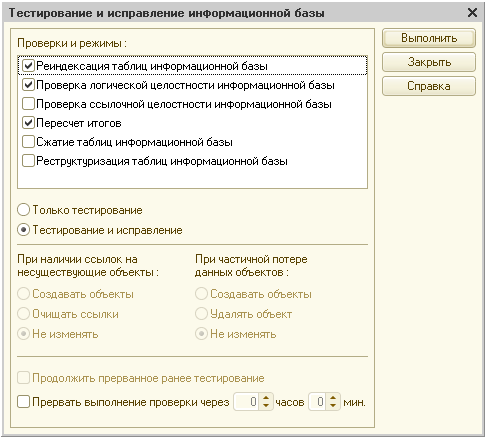

Выгрузка информационной базы данных в файл
Текущую информационную базу данных можно сохрянить в файл на диске.
Для сохранения данных в файл выберите пункт "Администрирование - Выгрузить информационную базу данных в файл", рис. 1.

Рис. 1. Выгрузка информационной базы данных в файл
На экран выводится стандартный диалог выбора файла. Выберите каталок и укажите имя файла, в который будет записаны данные, рис. 2.

Рис. 2. Сохранение файла
Этот механизм предназанчен прежде всего для получения образа информационной базы независимо от способо хранения данных.
Иногда этот режим используют также для создания резервной копии информационной базы, однако такой вариант его использования обладает рядом недостатков.
Основным недостаткмо является необходимость использования однопользовательского режима для выполнения этой операции.
"Примечание". Работа информационной базы в монопольном режиме не переводит базу данных MS SQL в однопользовательский режим.
При большом объёме информационной базы перерыв в работе пользователей может быть достаточно велик, и это не всегда приемлемо.
Загрузка информационной базы данных из файла
Для восстановления информационной базы данных из файла используется пункт "Администрирование - Загрузить информационную базу данных из файла", рис. 3.

Рис. 3. Загрузка информационной базы данных из файла
На экран выводится стандартный диалг выбора файла. Необходимо выбрать каталого и указать имя файла, в который будет записаны данные.
ВАЖНО! При восстановлении текущая информационная база данных будет польность заменена.
Создание резервной копии информационной базы
Процессы создания копии информационной базы при работе в файловом и клиент - серверном варианте работы системы "1С:Предприятие 8.2" могут отличатся.
Ниже рассматривается создание резервной копии в файловом варианте.
ВАЖНО! Для обеспечения целостности и соглазованности данных работа пользователей с информационной базой во время создания резервной копии должна быть запрещена.
Создание резервной копии осуществляется в любой программе, поддерживающей работу с файлами, например, в программе "Проводник (Explorer) Microsoft Windows". С помощью программы работы с файлами необходимо открыть каталог с информационной базой. Для создания копии информационной базы можно просто скопировать файл "1cV8.2cd" в отдельный каталог. Для восстановления (в случае утери, порчи и т. д.) информационной базы достаточно скопировать сохранённый файл в прежний каталог.
Заметим, что для копирования информационной базы также можно испоьзовать специализированное программное обеспечение, предназанченное для резервного копирования и восстановления данных.
Преобразование информационной базы для использования в клиент-серверном варианте
Выгрузка/загрузка информационной базы в файл может быть использована, например, для преобразования файлового варианта в клиент - серверный.
ВАЖНО! Перед выполнением выгрузки и загрузки все сеансы работы с данной информационной базой необходимо закрыть.
Выполните выгрузку информационной базы (пункт "Администрирование - Выгрузить информационную базу данных"). Затем создайте пустую информационную базу в варианте использования клиент - сервер. Откройте базу в режиме "Конфигуратор" и выполните загрузку информационной базы (пункт "Администрирование - Загрузить информационную базу данных").
Тестирование и исправление информационной базы
В процессе работы системы "1С:Предприятие 8.2" могут возникать различные внештатные ситуации - отключение питания компьютера, "зависание" операционной системы, сбои оборудования и прочее. Такие ситуации, возникшей в процессе записи изменений в информационную базу системы "1C:Предприятие 8.2", могут привести к её некорректному состоянию. Внешние проявления некорректного состояния информационной базу могут бть различными, вплость до невозможности запуска.
Процедура "Тестирование и исправление информационных баз()" предназначена для диагностики и устранения ошибочных состояний инфомрационных баз, имеющих различные формат (файловый или клиент - серверный).
Для запуска режима используется пункт "Администрирование - Тестирование и исправление ИБ", рис. 4.

Рис. 4. Тестирование и исправление ИБ
На экран выводится диалог:

Рис. 5. Диалоговое окно
В списке проверок и режимов следует установить требуемые выди выполняемых действий. Виды тестирования можно производить независимо друг от друга. Для файлового варианта информационной базы возможно выполнение реиндексирования и сжатия базы данных. Для обоих вариантов (файловый и клиент - серверный) возможно проверка логической целостности данных и пересчёт итогов.
Для некоторых распределённых инфомрационных баз, у которых возможно получение данных, содержащих ссылки на объекты, не расположенные в тестируемой информационной базе, снятие флажка "Проверка ссылочной целостности информационной базы" позволит отключить создание "несуществующих" данных и как следствие не прведёт к передаче этих данных в другие узлы распределённой информционной базы.
Под списком режимов расположены три группы настроек.
В первой группе выбирается, что необходимо выполнить: терситрование или тестирование и исправление. В первом случае программа проведёт проверку информационной базы без внесения в неё каких-либо изменений. Во вротом случае будут выполнены директивы, указанные во второй группе настроек. Смысл переключателей понятен из их названия.
Третья группа элементов управления позволит выполнять длительные процедуры тестирования и исправления в несколько сессий.
Флаг "Проверка выполнения проверки через" позволяет задать интервал времени, по истечении которого тестирование будет прервано, а параметры тестирования и исправления сохранены до следующей сессии конфигуратора.
Флаг "Продолжть прерванное ранее тестирование" позволяет продолжить процесс с того места, на котором он был прерван в предыдущей сессии тестирования и исправления.
Событие тестирования и исправления отображаются в журнале регистрации.
Для запуска тестирования необходимо нажать кнопку "Выполнить".
Программа произведёт анализ возможности установки монопольного режима и устанавливает монопольный режим. В случае обранужения невозможности установки на экран вводится предупреждение: "Не удалость переключить доступ в монопольный режим. Имеются работающие пользователи". Для получения информации о работающих пользователях откройте список активных польозвателей (выберите пункт "Администрирование - Активные пользователи").
Если монопольный режим установлен, запускается процесс выполнения уазанных дейсвтий и на экран выводится информационная страница диалога о выполении тестирования.
Примечание. Работа информационной базы в монопольном режиме не переводит базу данных MS SQL в однопольозвательский режим .
После завершения работы монопольный режим снимается.
В комплект поставки входит утилита восстановления файлового варианта базы данных.
Выполнение централизованной проверки конфигурации
Для выполнения проверки конфигурации выберите пункт "Конфигурация - Проверка конфигурации". На экран выводится окно:
Мезанизм проверки конфигурации предоставляет следующие тесты:
- Проверка логической целостности конфигурации. Стандартная проверка, обычно выполняемая перед обновлением базы данных.
- Поиск некорректных ссылок. Поиск ссылок на удалённые объекты. Выполняется по всей конфигурации, включая права, формы, макеты, интерфейсы и т.д. Также осуществляется поиск логически неправильных ссылок.
- Работа клиенского приложения. Проверка компилации модулей в режиме проверки среды клиентского приложения, выполняемого в файловом режиме.
- Работа внешнего соединения. Проверка компиляции модулей в режиме проверки среды внешнего соединения, выполняемого в файловом режиме.
- Работа клиенсткого приложения в режиме клиент-сервер. Проверка компиляции модулей в режиме проверки среды улиентского приложения, выполняемого в режиме клиент-сервер.
- Работа внешнего соединения. Проверка компилации модулей в режиме проверки среды внешнего соединения, выполняемого в режиме клиент-сервер.
- Работа сервера системы "1С:Предприятие 8.2". Проверка компиляции модулей в режиме проверки среды сервера системы "1С:Предприятие 8.2"
- Поставка модулей без исходных текстов. В случае если в настройках проставки конфигурации для некоторых модулей указана поставка без исходных текстов, проверяется возможность генерации образов этих модулей.
- Поиск неиспользуемых процедур и фунций. Поиск локальных (не экспортных) процедур и функций, на которые отсутствуют ссылки. В том числе осуществляется поиск неиспользуемых обработчиков событий.
- Проверка существования назначенных обработчиков. Проверка существования обработчиков событий интерфейсой, форм и элементов управления.
- Поиск пустых обработчиков. Поиск назначенных обработчиков событий, в которых не выполняется никаких действий. Существование таких обработчиков может привести к падению производительности системы.
Выбранную совокупность настроек можно сохранить для дальнейшего использованияю. Для этого в поле "Настройка проверки" укажите имя настройки. Для использования прежней настройки достаточно выбрать (или ввести) имя настройки.
Все сообщения об ошибках выдаются в окне сообщений.
Для прерывания проверки конфигурации используйте кобминацию клавиш "Ctrl + Break".
Примечание. В начальной стадии проверки прерывание может быть обработано с задержкой.
При проверке конфигурации, подключённой к хранилищу, во избежание ошибок, связанных с информацией о метаданных, рекомендуется захватить корневой объект конфигурации.
Практическое задание
Задание: Разработать новую конфигурацию и добавьте в неё элементы из таблицы 1.
Таблица 1
| Подсистемы | ||
|---|---|---|
| Наименование | Описание | |
| Производство | - | |
| Снабжение | - | |
| Справочники | ||
| Наименование | Описание | Подсистема |
| Контрагенты | Код (строка, 5), Наименование (строка 100) | Производство |
| Номенклатура | Код (число, 5), Наименование (строка 50), Вес (число 3,2) Единица измерения (строка 4) | Производство |
| Документы | ||
| Наименование | Реквизиты | Подсистема |
| Заказ На Производство Продукции | Шапка документа: Контрагент (строка 10), Испольнитель (строка 10), ДатаИсполнения (дата). Табличная часть: Номенклатура (строка 20), Количество (число 5,2) |
Снабжение |
| Корректировка Заказа На Производство Продукции | Шапка документа: ЗаказНаПроизводство (строка 10), Контрагент (строка 10), Исполнитель (строка 20), ДатаИсполнения(дата). Табличная часть: Номенклатура (строка 20), Количество (число 5,0). |
Снабжение |
Запустите данную конфигурацию в режиме пользователя, заполните справочники и документы из таблицы 2, и сохраните информационную базу в файл ИнформационнаБаза, рис. 6.
Рис. 6. ИнформационнаБаза
Таблица 2
| Справочники | |
|---|---|
| Наименование | Данные |
| Контрагенты | 1. ИП "Чиплыгин" 2. ОАО "Акрос" 3. ООО "Сбербанк" |
| Номенклатура | 1. Свежая рыба, 1.0 кг 2. Ястыки, 0.5 кг, |
| Документы | |
| Наименование | Данные |
| Заказ На Производство Продукции | 1. Контрагент: ОАО "Акрос", Исполнитель: Иван Иванович, Дата исполнения: 12.12.12, Табличная часть: Свежая рыба, 1.2 кг 2. Контрагент: ООО "Сбербанк", Исполнитель: Алексей Иванович, Дата исполнения: 11.11.11, Табличная часть: Ястыки, 0.5 кг |
| Корректировка Заказа На Производство Продукции | Заказ на производство: Срочный заказ, Контрагент: ОАО "Акрос", Исполнитель: Валерий Николаевич, Дата исполнения: 06.04.12, Табличная часть: Срочный заказ, 5 |